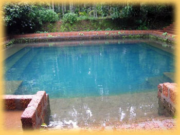

|
THE
BIRTH OF NELLITHEERTHA
|
|
The following is a narration of the story that led to the creation of the temple at Nellitheertha. Many of the incidents here can be linked to the rituals and customs being followed in the temple even to this day. When Adharma Reared Its Ugly Head In the early part of Kali-Yuga, according to the rules of time, Adharma (evil) started to show its ugly head all over the world. This became especially rampant in �Parashurama Kshetra� where lawlessness, murder, robbery, disregard for God became the order of the day and the lives of ordinary people became miserable. Just when things were getting completely out of control, Sage Narada, who is always working for world peace, decided it was time for some divine intervention and met Lord Shri Maha Vishnu, the proliferator of Dharma on this land. Lord Maha Vishnu consulted Lord Parameshwara (Shiva) and came to a conclusion on the action plan for restoration of Dharma on earth. Accordingly, under the stewardship of Lord Vishnu�s vehicle Vasuki (Nagaraj or Snake God), Lord Shiva�s ganas (assistants) or Bhootas namely Raktheshwari, Kshetrapala, Nandigona, Varahi, Barbaraka and Paashaanamurthy were sent to earth to operate from Parashurama Kshetra which stretched from the north of River Phalguni to the east of River Nandini. Vasuki and the Ganas came to Parashurama Kshetra and settled down in a beautiful place called as Nagavana (snake forest). Here they tried to promulgate Dharma and Bhakti among the people for some time. But whether it was the influence of time or the effect of the land, the Ganas gradually changed and became arrogant and egoistic. They came under the false belief that they were mightier than Eshwara (God) himself and this reflected upon their activities which ventured off the path of Dharma. Adharma started to rise again. Maharshi Jabali The great Sage Jabali was performing penance for world peace on the banks of the river Bhagirathi near a place called Thataaka. One day, Sage Narada approached him and asked him thus �O Sage Jabali! What is the purpose of this penance? What do you want to achieve? On the one hand, you have been responsible for the proliferation of evil forces and here on the other hand, you are performing penance for world peace. This dual strategy of yours really perplexes me�. Sage Jabali was surprised at the comments of Sage Narada and asked him �O Great Sage Narada! You work for world peace day and night and are aware of everything. What then is the reason for such comments from you? Since both our intentions are the same, wouldn�t straight talk be more appropriate here?� Sage Narada replied thus �That demon Arunasura upon whom you so kindly bestowed your blessings and advised the Gayathri Mantra (the most sacred mantra for Hindus�which carries the essence of the Vedas), is now using the same for the destruction of Dharma on earth. Evil forces are gaining ground on earth and Bhakti is coming down. Unethical and immoral activities are increasing day by day. Because of the power of the Gayathri Mantra, even the Trimurties (the holy trinity of the Hindus�Brahma, Vishnu and Shiva) are also powerless to destroy him�. This update from Sage Narada put Sage Jabali in a worry. He said �Sage Narada! Please advise me on a way to end this menace�. To this, Sage Narada replied �O Maharshi! Just as you were responsible for the rise of Arunasura, so you shall also be responsible for his downfall. Though this may sound paradoxical, it is Bhagavat-Sankalpa (divine-decision). Therefore, you please proceed to Parashurama Kshetra and perform penance for pleasing Lord Shakti on the banks of the river Nandini. Lord Shakti alone can destroy Arunasura. There is a place called Nagavana near river Nandini which is ideally suited for your mission�. Sage Jabali agreed to this and also indicated that he would take along river Ganga along with him for this purpose. Having triggered the destruction of evil, Sage Narada wished that all ends well and proceeded. Jabali prays to Ganga and Lord Shiva Sage Jabali performed penance and Mother Ganga appeared before him fully pleased with his penance. Sage Jabali explained his mission of having to go to Parashurama Kshetra and requested Ganga to join him in this holy mission. Having listened to Sage Jabali�s plea, Ganga replied thus �O Noble Sage! I fully admire your concern for societal health and well being. But I am helpless. I have certain problems because of which I will not be able to accompany you right away. Are you aware of them? Earlier, when Vasundhara was unable to handle my flow, Lord Shiva had to provide shelter to me in his locks. In the same way, South India cannot handle the severity of my flow. But I cannot disappoint devotees like you. Therefore, I will suggest a way out of this. If you sit down and perform penance to please Lord Shiva for your activities, I promise that I shall appear there as Antar-Ganga (appearing from underground). Thus I shall make the land holy. Sage Jabali was immensely pleased and performed penance to please Lord Shiva. Lord Shiva was very pleased and appeared before the Sage. He said �O Maharshi! Though it is a well established fact that Adharma abounds in Kali-Yuga, it sometimes gets out of hand. It is our duty to destroy such evil and protect Dharma. The destruction of those evil forces which is not possible either through the power of boons or through the power of mantras is possible through strategy and planning alone. Arunasura has pleased Lord Shakti through the power of the Gayathri Mantra thus making his destruction an impossible task for us�. Hearing this, Sage Jabali was shaken a bit. He pleaded thus �Lord! What is the way out of this maze? There is no way that peace can be established on earth if Arunasura is not destroyed�. Lord Shiva took mercy and spoke thus �Jabali! If you are ready to lead this effort, I am ready to help you in this. Listen. You, along with Ganga, proceed immediately to Nagavana in Parashurama Kshetra. There is a beautiful cave at that place. Perform severe penance in the cave and please Lord Shakti. If she is pleased with you, your wishes will come true. In order to protect you and to ensure that your penance is not disturbed, I shall send along two of my Ganas with you. Vyaghra Chamundi and Doomavathy shall accompany you�. Jabali reaches Nagavana Upon receiving Sage Narada�s advice and Lord Shiva�s order and having realized that both of them had suggested that Shri Shakti is alone the way out for this problem, it dawned upon Sage Jabali that the time for appeasement of Shakti had arrived. He traveled southward along with Shiva�s ganas and reached a forest which was full of Bilva trees. Sage Jabali was amazed at what he saw. He was astounded at the marvelous site of the cave. Beautiful trees, creeps and flowers adorned the entire area. The sweet voices of the birds, the peaceful co-existence of animals and the aroma of the forest immensely pleased the Sage. He found great spiritual solace at the place. His determination to succeed in the cause as also the devotion in his heart for the Lord increased manifold. Sage Jabali quickly realized that this was the place suggested by the Lord and decided to perform severe penance at this very spot. At the same spot, Vasuki and the other ganas of Shiva had been residing since a long time. Kshetrapala, who saw these strangers occupying the place, fell suspicious and immediately reported the matter to Vasuki. The arrogant Vasuki did not think over the matter and immediately ordered his assistants Raktheshwari, Varahi, Nandigona, Barbaraka and Paashanamurthy to interrogate the strangers on the matter. Vyaghra Chamundi (also known as Pili-Chamundi in Tulu language) saw the Bhootas approaching them. He smelt a craving for war in their intentions. He stopped them midway and said �O Bhootas! We are no different from you people. Our intentions are quite similar to yours. We have also been sent by Lord Shiva to establish Dharma on this land. Since you are also residing here with the same intentions, what is the need for an altercation between us. You have forgotten your duty and become arrogant under the influence of power. Get over the veil of ego that has engulfed and join hands with us in restoring truth on this land�. Upon listening to this request from Pili-Chamundi, reality dawned upon Raktheshwari and Kshetrapala and they immediately became assistants to the Sage. (Even to this day, services are offered to Raktheshwari and Kshetrapala in the form of Nemas and Parvas). But no such changes took place in Varahi, Nandigona, Barbaraka and Paashanamurthy. They attacked Doomavathy and Vyaghra Chamundi. A fierce war ensued and Doomavathy and Pili-Chamundi reached the brink of defeat. At this stage, Sage Jabali himself stepped in. The Bhootas were no match for the divine power of the Sage. They were defeated and they ran back to Vasuki. The arrogant Vasuki himself came to war with Jabali. He had lost his sense of reason and was incapable of judging the greatness of the Sage. He spoke ill of the Sage and disrespected him. This enraged Sage Jabali and he said �O Nagaraj! You forget the divinity of Hari and Hara. You are discounting us and our intentions of world peace. I hereby curse you that you shall have no existence on earth�. Vasuki was shocked at the curse. The cloud of ignorance that had blocked his senses waned off. Reality dawned upon him. He prostrated before the Sage and begged for forgiveness for himself and the other ganas. Seeing Vasuki realize his mistake and purify himself in the fire of repentance, the Sage�s anger vanished and he took mercy on him. Sage Jabali said �O Vasuki! What can I do. A Sage�s curse can never be revoked. But it can definitely be altered. Your existence has been destroyed by a Brahmin�s anger. But in due time, Lord Parameshwara will make this place his abode and will appear here in the form of a Lingam. Further, devotees will build a beautiful temple for him here. When poojas, yaganas and other practices as prescribed by Dharma start happening here again, you shall gain your existence back again�. Vasuki and the other ganas felt happy at this and joined hands with the rest of them to aid in establishing Dharma. Sage Jabali entered the cave and was astounded by its beauty. He proceeded towards the inside of the temple fully enjoying the natural beauty of the landscape. As promised, River Ganga appeared there from within and started flowing. Sage Jabali said �Ganga flows from Lord Shiva�s head. Ganga flows from Kashi. And now, Ganga flows in Nagavana. O Lord! No one can predict your divine intentions�. At that moment, Lord Shiva appeared inside the cave in the form of a Lingam. Seeing all this happen, Sage Jabali felt a great energy flow within him and he sat down to perform penance to please Lord Adi Shakti. Developments at Ekaveeradripura At Ekaveeradripura, Arunasura was ruling the land according to his Rakshasa Dharma. His rule was evil and he was a terror for his citizens. Earlier, he had obtained the Gayathri Mantra from Sage Jabali and had used it to please Lord Adi Shakti. He had obtained a boon from Lord Adi Shakti that he cannot be killed even by the Trimurtis. Using that boon, he had conquered Swarga, Martya and Patala lokas (Heaven, Earth and the Nether lands). As per the wishes of the divine, Sage Narada, who is constantly working towards establishment of Dharma, realized that the time to put an end to Arunasura had arrived and that he had a role to play in it. He approached Arunasura�s palace. The demon welcomed Sage Narada and offered him all the obliterations. The demon asked the Sage thus �O Maharshi! I am blessed by your arrival. Please do let me know the reason for your visit�. Sage Narada laughed and said �Arunasura! I took pity upon seeing your ignorance and decided to visit you. I am sure I can call you a fool going by your actions�. This made Arunasura angry and he said �O Narada! Instead of pricking me with your skeptical statements, please come straight to the point and help me clarify the doubts in my mind�. Sage Narada said �O King of the Rakshasas! There is a fire burning in your palace and you are still unaware of it. That very person who advised you on the Gayathri Mantra is now working overtime to ensure your destruction. Sage Jabali is performing a severe penance at Nagavana and he is trying to please Lord Shakti. Do not delay even a little. Proceed immediately to stop his penance. Else, your end is guaranteed�. Arunasura was outraged listening to this story and he immediately ordered two of his trusted lieutenants�Chanda and Prachanda to proceed towards Nagavana and spoil Sage Jabali�s penance. Chanda and Prachanda took along a huge army with them and attacked Nagavana. A fierce battle ensued between the Rakshasas and the Bhootas. The Rakshasas reached the brink of defeat and retreated. But soon, they came back like waves of the ocean. This time they were under the leadership of Arunasura himself. They completely surrounded Nagavana. This alerted Kshetrapala and he realized the gravity of the situation. He immediately entered the cave and spoke to Sage Jabali��O Lord! A fierce war is happening between us and Arunasura�s army. At any time now, the Rakshasas may enter the cave and put an end to your penance. Therefore, you please proceed towards the east using the secret exit in the cave. There you please perform the Chandika Yagna (the biggest and grandest yagna for Lord Shakti) and appease Lord Shakti�. Sage Jabali�s mind was at the crossroads. On one side was the impending trouble from the Rakshasas, on the other hand Lord Adi Shakti had not yet appeared. And then there was the suggestion from Kshetrapala. Under pressure, Sage Jabali meditated and thought for a while. It dawned upon the Sage that if Lord Adi Shakti wished to appear only through the Chandika Yagna, then that has to be the adopted route. So, as per directions from Kshetrapala, Sage Jabali exits the cave and reaches a place called Mallikavana. Finding it an equally beautiful place, Sage Jabali decides to peform the Yagna there. The Trimurtis, the Devas and the Bhootas stand as guards for the Yagna. Upon not finding Sage Jabali inside the cave, Arunasura is very agitated and thinks he has been cheated by Sage Narada. He starts indiscriminately killing Rishis and Sages as revenge. His end is nearing!! Adi Shakti Obliges! The yagna being performed at Mallikavana had no match in history. It was a litmus test for the devotion of Sage Jabali. It was a yagna being performed for world peace. Right at the time of the Poornahuti (the offering towards the completion of the yagna), Lord Adi Shakti appeared right at the middle of the fire with a pleasant smile on her face. When asked the reason for the yagna, Sage Jabali narrated the entire story and pleaded for her intervention. Lord Adi Shakti said �O Devotees! Let there be no fear. This day has come upon us because of the mistake of advising a Rakshasa with the Gayathri Mantra without giving a thought to the gravity of the consequence of such an action. But he has acted according to his birth qualities. Even then, he is my true devotee. He has been worshipping me every day with complete devotion. Hence I shall create a separate environment where he will reach the brink of his bad deeds. Near a place called Kati on the banks of the river Nandini, I shall take the form of a Brahmari (bee) and kill him. (This sacred place is now called Kateel where Lord Adi Shakti took the form of a bee and killed Arunasura. The God is worshipped as Lord Durgaparameshwari here. It is one of the most sacred places of South India). � Lord Shakti continued addressing her devotees �O Parameshwara! You may reside at the place where Sage Jabali performed penance. Appear there in the form of a Lingam and bless the devotees with their wishes (This place is Nagavana or Nellitheertha where Lord Shiva resides as Lord Shri Somanatheshwara). O Ganga! You may flow in the cave for six months a year and help people get rid of their sins. You may get back to Kashi for the other six months. Let this place be called as Dakshina Kashi (Kashi of the South). O Vishnu! You may appear in the nearby place called Kovalapura and bless the devotees (This place, called Kompadavu, is close to Nellitheertha and has a beautiful Vishnu temple). Since the holy Chandika Yagna was performed at Mallikavana, I shall appear there in the form of Mahakali, Mahalakshmi and Mahasaraswathi and shall bless all those who pray to me (This place, called Mucchur, is adjoining Nellitheertha). This same place Nagavana, due to the goose berry shaped water drops falling from the roof of the cave, came to be known as Nelli-Theertha (Gooseberry-Holy water). It is believed that Sages and gods occupy the cave for six months and hence, even to this day, humans are allowed to enter the cave only six months a year (from October to April). Subsequently, there is historical evidence to suggest that the Chowta rulers of Moodabidri handled the administration of the temple during the times of the Vijayanagara Empire and it is they who built the beautiful Shri Somanatheshwara Temple at Nellitheertha. Shri Somanatheshwaraya Prasanna |
|
Best
Viewed in 800x600 |